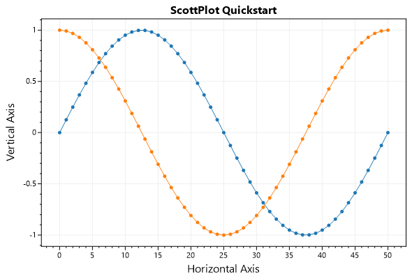
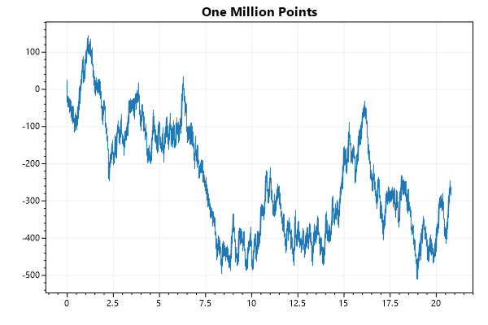
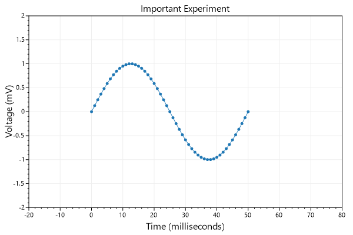
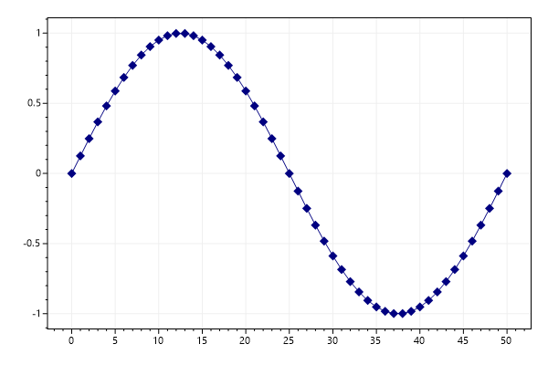
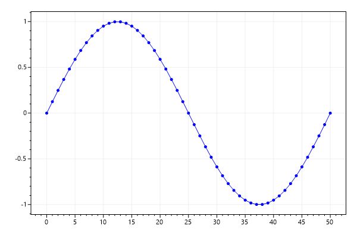

ScottPlot Cookbook: Quickstart
⚠️ Documentation is version-specific: This page was generated forScottPlot 4.1.4-beta
Additional documentation and more version-specific cookbooks are on the ScottPlot Website
Scatter Plot
Scatter plots have paired X/Y points.var plt = new ScottPlot.Plot(600, 400);
// sample data
double[] xs = DataGen.Consecutive(51);
double[] sin = DataGen.Sin(51);
double[] cos = DataGen.Cos(51);
// plot the data
plt.AddScatter(xs, sin);
plt.AddScatter(xs, cos);
// customize the axis labels
plt.Title("ScottPlot Quickstart");
plt.XLabel("Horizontal Axis");
plt.YLabel("Vertical Axis");
plt.SaveFig("quickstart_scatter.png");

Signal Plot
Signal plots have evenly spaced Y points. Signal plots are very fast and can interactively display millions of data points. There are many different types of plottable objects, each serving a different purpose.var plt = new ScottPlot.Plot(600, 400);
double[] values = DataGen.RandomWalk(1_000_000);
plt.AddSignal(values, sampleRate: 48_000);
plt.Title("One Million Points");
plt.SaveFig("quickstart_signal.png");

Axis Labels and Limits
Axis labels and limits can be customizedvar plt = new ScottPlot.Plot(600, 400);
double[] time = DataGen.Consecutive(51);
double[] voltage = DataGen.Sin(51);
plt.AddScatter(time, voltage);
// Axes can be customized
plt.XAxis.Label("Time (milliseconds)");
plt.YAxis.Label("Voltage (mV)");
plt.XAxis2.Label("Important Experiment");
// Set axis limits to control the view
plt.SetAxisLimits(-20, 80, -2, 2);
plt.SaveFig("quickstart_axis.png");

Manually Add a Plottable
You can create a plot manually, then add it to the plot with Add(). This allows you to create custom plot types and add them to the plot.var plt = new ScottPlot.Plot(600, 400);
double[] xs = DataGen.Consecutive(51);
double[] sin = DataGen.Sin(51);
// instantiate a plottable
var splt = new ScottPlot.Plottable.ScatterPlot(xs, sin);
// customize its style or change its data as desired
splt.Color = Color.Navy;
splt.MarkerSize = 10;
splt.MarkerShape = MarkerShape.filledDiamond;
// add it to the plot
plt.Add(splt);
plt.SaveFig("quickstart_add.png");

Clear plottables
Call Clear() to remove all plottables from the plot. Overloads of Clear() allow you to remote one type of plottable, or a specific plottable.var plt = new ScottPlot.Plot(600, 400);
double[] xs = DataGen.Consecutive(51);
double[] sin = DataGen.Sin(51);
double[] cos = DataGen.Sin(51);
plt.AddScatter(xs, sin, color: Color.Red);
plt.Clear();
plt.AddScatter(xs, cos, color: Color.Blue);
plt.SaveFig("quickstart_clear.png");
